copyright: 徐渊 大连理工大学电信学部
gitbub: AlfredZee.github.io
reference: python数据分析实战，实验楼
time: 2019-4-13
QQ: 1239820340（联系请注明原因）
本项目是个人项目，均由笔者一人完成，在确定项目的研究对象时，选取了笔者生活的长江三角洲，主要目的是锻炼用python处理数据的能力，故选取了比较一般的，易获取的气象数据进行实验，同时也增进对故乡的了解
本次实验的气象数据取自Openweathermap，该网站上有全球各大城市的历史，实时以及未来预测的气象数据。
该网站有以下注意点：
本次实验的数据获取：
本实验的数据预处理主要为json到csv的转换，以及添加离海距离这一列
1.需要import的库：
import pandas as pd
import numpy as np
import json
2.从文件中加载数据：
# get path and load data
jsonfile_path = "/home/singularity/桌面/weather_ana/jsonfile/maanshan.json"
with open(jsonfile_path, "r", encoding = "utf-8") as j_obj:
json_data = json.load(j_obj)
3.从嵌套列表字典中获取相应key的value的两个函数：
# 2 functions for data fetching
def get_target_value(key, dic, tmp_list):
"""
:param key: 目标key值
:param dic: JSON数据
:param tmp_list: 用于存储获取的数据
:return: list
"""
if not isinstance(dic, dict) or not isinstance(tmp_list, list): # 对传入数据进行格式校验
return 'argv[1] not an dict or argv[-1] not an list '
if key in dic.keys():
tmp_list.append(dic[key]) # 传入数据存在则存入tmp_list
else:
for value in dic.values(): # 传入数据不符合则对其value值进行遍历
if isinstance(value, dict):
get_target_value(key, value, tmp_list) # 传入数据的value值是字典，则直接调用自身
elif isinstance(value, (list, tuple)):
_get_value(key, value, tmp_list) # 传入数据的value值是列表或者元组，则调用_get_value
return tmp_list
def _get_value(key, val, tmp_list):
for val_ in val:
if isinstance(val_, dict):
get_target_value(key, val_, tmp_list) # 传入数据的value值是字典，则调用get_target_value
elif isinstance(val_, (list, tuple)):
_get_value(key, val_, tmp_list)
4.从内存取出数据（下载的数据每个城市有38条，而name这个key在json字典中只有1个，dist为自己添加的列）：
# get data from json
name_lst = get_target_value('name', json_data, [])
city = name_lst[0]
name_lst = [city for i in range (1, 39)]
temp_lst = get_target_value('temp', json_data, [])
temp_min_lst = get_target_value('temp_min', json_data, [])
temp_max_lst = get_target_value('temp_max', json_data, [])
sea_level_lst = get_target_value('sea_level', json_data, [])
grnd_level_lst = get_target_value('grnd_level', json_data, [])
pressure_lst = get_target_value('pressure', json_data, [])
humidity_lst = get_target_value('humidity', json_data, [])
speed_lst = get_target_value('speed', json_data, [])
deg_lst = get_target_value('deg', json_data, [])
description_lst = get_target_value('description', json_data, [])
time_lst = get_target_value('dt_txt',json_data,[])
dist_qidong_lst = [23.5 for i in range(1, 39)]
dist_haimen_lst = [66.10 for i in range(1, 39)]
dist_nantong_lst = [89 for i in range(1, 39)]
dist_taizhou_lst = [122 for i in range(1, 39)]
dist_yangzhou_lst = [182 for i in range(1, 39)]
dist_zhenjiang_lst = [190 for i in range(1, 39)]
dist_nanjing_lst = [258 for i in range(1, 39)]
dist_chuzhou_lst = [293 for i in range(1, 39)]
dist_maanshan_lst = [330 for i in range(1, 39)]
dist_chaohu_lst = [390 for i in range(1, 39)]
dist_hefei_lst = [440 for i in range(1, 39)]
5.利用pandas构建data frame，拼接后输出：
# transform data to column
name_se = pd.Series(name_lst, name = 'name')
temp_se = pd.Series(temp_lst, name = 'temp')
temp_min_se = pd.Series(temp_min_lst, name = 'temp_min')
temp_max_se = pd.Series(temp_max_lst, name = 'temp_max')
sea_level_se = pd.Series(sea_level_lst, name = 'sea_level')
grnd_level_se = pd.Series(grnd_level_lst, name = 'grnd_level')
pressure_se = pd.Series(pressure_lst, name = 'pressure')
humidity_se = pd.Series(humidity_lst, name = 'humidity')
speed_se = pd.Series(speed_lst, name = 'speed')
deg_se = pd.Series(deg_lst, name = 'deg')
description_se = pd.Series(description_lst, name = 'description')
time_se = pd.Series(time_lst, name = 'time')
# add dist column
dist_qidong_se = pd.Series(dist_qidong_lst, name = 'dist')
dist_haimen_se = pd.Series(dist_haimen_lst, name = 'dist')
dist_nantong_se = pd.Series(dist_nantong_lst, name = 'dist')
dist_taizhou_se = pd.Series(dist_taizhou_lst, name = 'dist')
dist_yangzhou_se = pd.Series(dist_yangzhou_lst, name = 'dist')
dist_zhenjiang_se = pd.Series(dist_zhenjiang_lst, name = 'dist')
dist_nanjing_se = pd.Series(dist_nanjing_lst, name = 'dist')
dist_chuzhou_se = pd.Series(dist_chuzhou_lst, name = 'dist')
dist_maanshan_se = pd.Series(dist_maanshan_lst, name = 'dist')
dist_chaohu_se = pd.Series(dist_chaohu_lst, name = 'dist')
dist_hefei_se = pd.Series(dist_hefei_lst, name = 'dist')
# put columns together and output
result_df = pd.concat([name_se, temp_se,temp_min_se, temp_max_se,
sea_level_se, grnd_level_se, pressure_se,
humidity_se, speed_se, deg_se, description_se,
time_se, dist_maanshan_se], axis = 1)
result_df.to_csv('maanshan.csv', index = False, sep = ',')
说明：上述处理脚本仅为马鞍山市的csv文件输出，其他城市请改变2中json加载文件和5中csv输出文件（由于是一个一个文件处理，如果一开始城市没选好就要重新改一遍文件名再一个一个输出，再次提醒确定好数据的重要性！）
1.创建csv数据加载脚本
import pandas as pd
df_qidong = pd.read_csv('/home/singularity/桌面/weather_ana/csvfile_30/qidong.csv')
df_haimen = pd.read_csv('/home/singularity/桌面/weather_ana/csvfile_30/haimen.csv')
df_nantong = pd.read_csv('/home/singularity/桌面/weather_ana/csvfile_30/nantong.csv')
df_yangzhou = pd.read_csv('/home/singularity/桌面/weather_ana/csvfile_30/yangzhou.csv')
df_zhenjiang = pd.read_csv('/home/singularity/桌面/weather_ana/csvfile_30/zhenjiang.csv')
df_nanjing = pd.read_csv('/home/singularity/桌面/weather_ana/csvfile_30/nanjing.csv')
df_chuzhou = pd.read_csv('/home/singularity/桌面/weather_ana/csvfile_30/chuzhou.csv')
df_maanshan = pd.read_csv('/home/singularity/桌面/weather_ana/csvfile_30/maanshan.csv')
df_chaohu = pd.read_csv('/home/singularity/桌面/weather_ana/csvfile_30/chaohu.csv')
df_hefei = pd.read_csv('/home/singularity/桌面/weather_ana/csvfile_30/hefei.csv')
df_taizhou = pd.read_csv('/home/singularity/桌面/weather_ana/csvfile_30/taizhou.csv')
2.生成离海距离-温度，离海距离-气压，离海距离-适度，离海距离-风速的图像，下以离海距离-温度为例：
import data_load as dl
import matplotlib.pyplot as plt
dist_lst = [dl.df_qidong['dist'][0],
dl.df_haimen['dist'][0],
dl.df_nantong['dist'][0],
dl.df_taizhou['dist'][0],
dl.df_yangzhou['dist'][0],
dl.df_zhenjiang['dist'][0],
dl.df_nanjing['dist'][0],
dl.df_chuzhou['dist'][0],
dl.df_maanshan['dist'][0],
dl.df_chaohu['dist'][0],
dl.df_hefei['dist'][0],
]
temp_lst = [dl.df_qidong['temp'].sum()/38,
dl.df_haimen['temp'].sum()/38,
dl.df_nantong['temp'].sum()/38,
dl.df_taizhou['temp'].sum()/38,
dl.df_yangzhou['temp'].sum()/38,
dl.df_zhenjiang['temp'].sum()/38,
dl.df_nanjing['temp'].sum()/38,
dl.df_chuzhou['temp'].sum()/38,
dl.df_maanshan['temp'].sum()/38,
dl.df_chaohu['temp'].sum()/38,
dl.df_hefei['temp'].sum()/38,
]
temp_max_lst = [dl.df_qidong['temp'].max(),
dl.df_haimen['temp'].max(),
dl.df_nantong['temp'].max(),
dl.df_taizhou['temp'].max(),
dl.df_yangzhou['temp'].max(),
dl.df_zhenjiang['temp'].max(),
dl.df_nanjing['temp'].max(),
dl.df_chuzhou['temp'].max(),
dl.df_maanshan['temp'].max(),
dl.df_chaohu['temp'].max(),
dl.df_hefei['temp'].max(),
]
temp_min_lst = [dl.df_qidong['temp'].min(),
dl.df_haimen['temp'].min(),
dl.df_nantong['temp'].min(),
dl.df_taizhou['temp'].min(),
dl.df_yangzhou['temp'].min(),
dl.df_zhenjiang['temp'].min(),
dl.df_nanjing['temp'].min(),
dl.df_chuzhou['temp'].min(),
dl.df_maanshan['temp'].min(),
dl.df_chaohu['temp'].min(),
dl.df_hefei['temp'].min(),
]
'''
1.use codes below only when you need to get the fig for you still
need codes above to do SVR
2.replace temp_lst with temp_min_lst and temp_max_lst
'''
'''
fig, ax = plt.subplots()
plt.plot(dist_lst, temp_lst, 'go')
plt.savefig("/home/singularity/桌面/weather_ana/result/dist_avetemp_conn")
plt.show()
'''
通过下面的离海距离-日均气温，我们发现好像两者并没有什么关系，我们猜想可能最高气温和最低气温相互抵消，需要进一步分析离海距离和最高，最低气温的关系。
this is a test
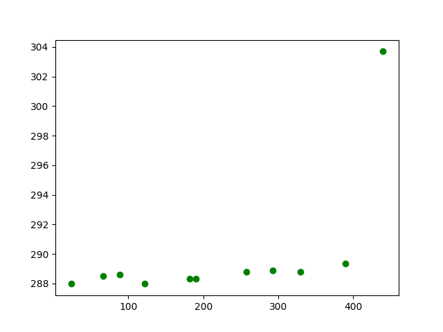
由下面结果可知，果然，离海距离和最高最低气温存在着一定的关系，就最高气温而言，随着离海距离的增大，最高气温逐渐升高，到某一距离后，最高气温不变，因为白天温度高，最高气温一定出现再白天，由于海水比热容大，白天海边温度低，所以有以上现象。
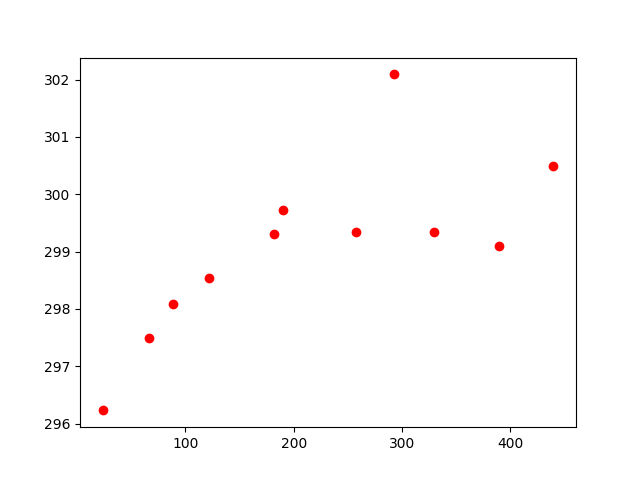
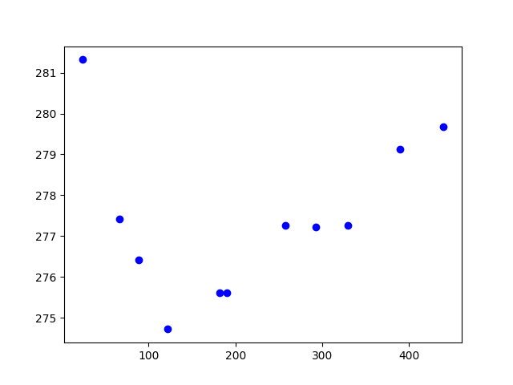
同样我们可以分析离海距离和平均，最高，最低湿度的关系，下面平均湿度和最低湿度由于数据量问题，好像并发现不到什么线性关系，而就最高湿度而言，在某一距离之内，最高湿度和离海距离存在着线性关系
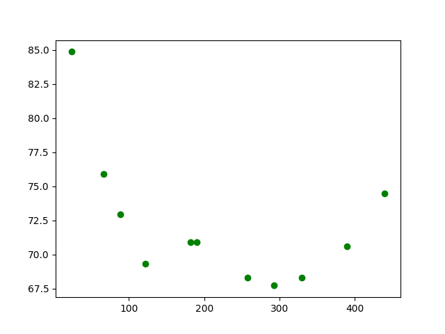
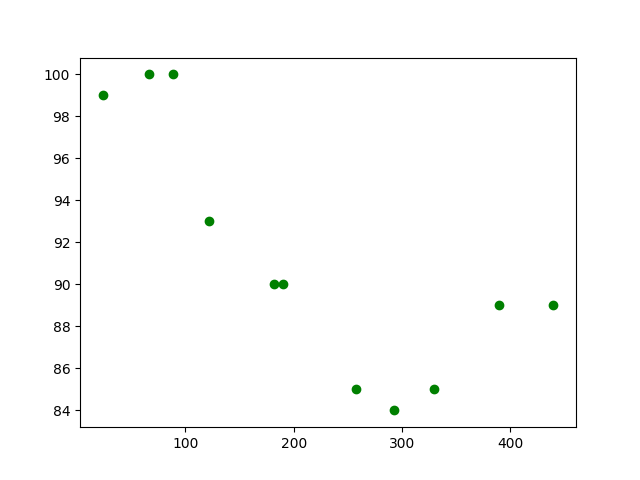
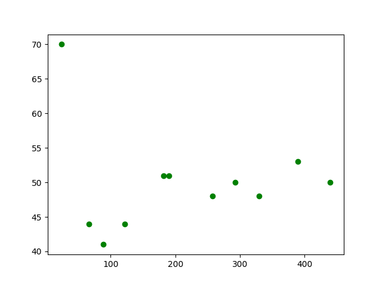
而对于平均气压，我们发现了与湿度类似的结论，只不过就气压而言，在某一距离之内，是最低气压和离海距离存在着线性关系，我们再进一步思考，其实着体现了湿度和气压之间的关系，湿度越大，空气中水汽越充分，气压就会越小
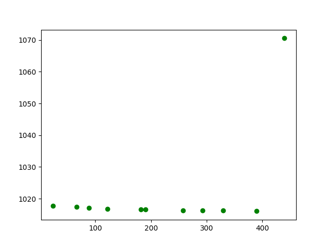
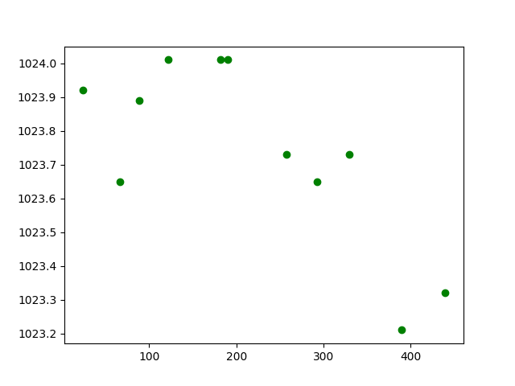
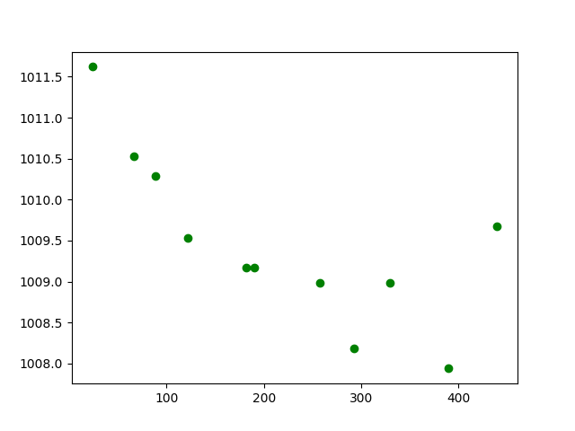
对于风速来说，我们得出了与常识一致的结果，一定距离内，离海越远，风速越小，而到了内陆，风速与离海距离没有什么关系
4.通过3中的分析使用SVR进行直线拟合，下以离海距离-日最高温度为例：
import dist_tmp_conn as dtc
from sklearn.svm import SVR
from scipy.optimize import fsolve
import matplotlib.pyplot as plt
import numpy as np
# set arange and change formatter
dist1 = dtc.dist_lst[0:6]
dist2 = dtc.dist_lst[4:11]
dist1 = [[x] for x in dist1]
dist2 = [[x] for x in dist2]
temp1 = dtc.temp_max_lst[0:6]
temp2 = dtc.temp_max_lst[4:11]
# get linear SVR obj
svr_line1 = SVR(kernel = 'linear', C = 1e3)
svr_line2 = SVR(kernel = 'linear', C = 1e3)
# input data
svr_line1.fit(dist1, temp1)
svr_line2.fit(dist2, temp2)
# draw predicted line
xp1 = np.arange(10, 210, 10).reshape((20, 1))
xp2 = np.arange(150, 500, 50).reshape((7, 1))
yp1 = svr_line1.predict(xp1)
yp2 = svr_line2.predict(xp2)
fig, ax = plt.subplots()
'''
# plot
plt.plot(xp1, yp1, c = 'g', label = 'strong sea effect')
plt.plot(xp2, yp2, c = 'b', label = 'weak sea effect')
plt.plot(dtc.dist_lst, dtc.temp_max_lst, 'ro')
plt.savefig("/home/singularity/桌面/weather_ana/result/dist_maxtemp_conn_SVR")
plt.show()
'''
# get x,y
def line1(x):
a1 = svr_line1.coef_[0][0]
b1 = svr_line1.intercept_[0]
return a1 * x + b1
def line2(x):
a2 = svr_line2.coef_[0][0]
b2 = svr_line2.intercept_[0]
return a2 * x + b2
def find_intersection(fun1, fun2, x0):
return fsolve(lambda x : fun1(x) - fun2(x), x0)
result = find_intersection(line1, line2, 0.0)
print("[x,y] = [%d,%d]" % (result, line1(result)))
x = np.linspace(150, 250, 10)
plt.plot(x, line1(x), x, line2(x), result, line1(result), 'ro')
plt.savefig("/home/singularity/桌面/weather_ana/result/dist_maxtemp_intsec")
plt.show()
5.下面是4中得到的拟合结果
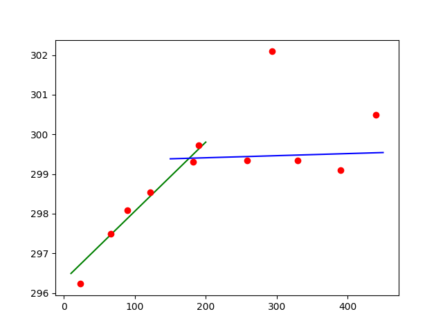
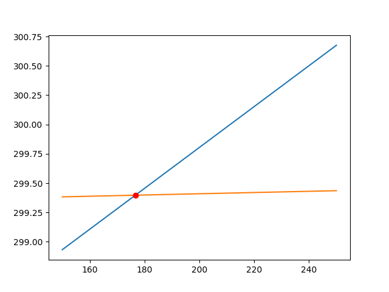
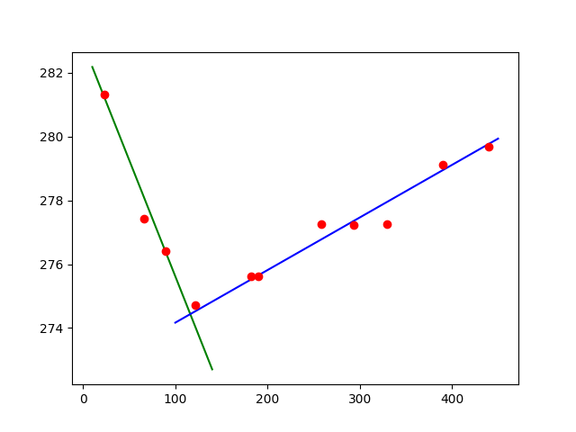
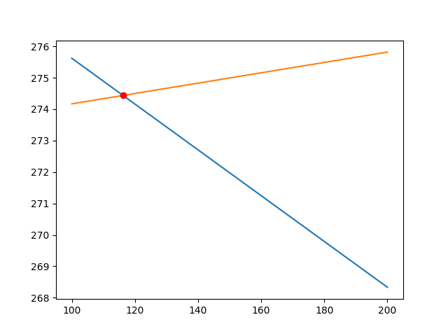
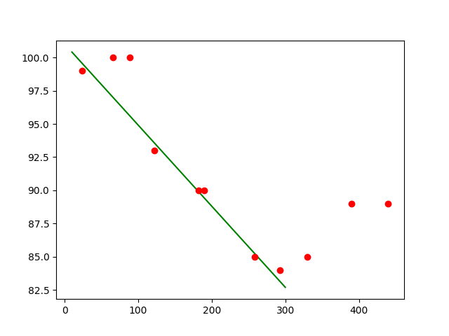
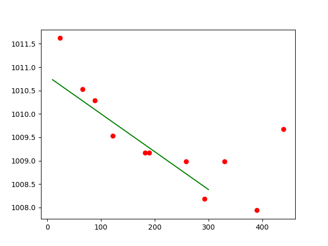
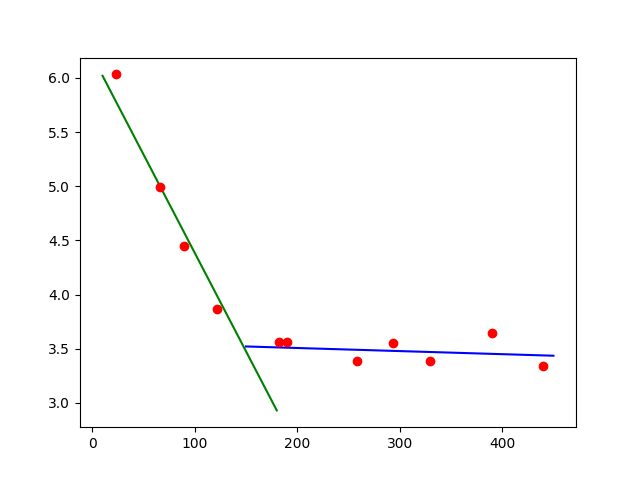
由$4.5中的结果我们可以得出有关维度在30度左右长江三角洲地区气象数据和离海距离的一些结论：
重现本项目可获得的经验：